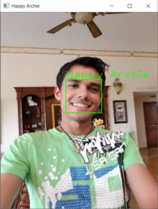
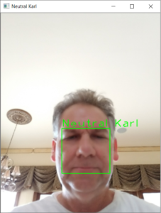

These past two weeks have been quite busy for me but it hasn’t been without its fruits. I had been attempting to program an eigenface module myself, however I was readily stopped for many reasons, most notably of which was processing time. The larger the images got, the longer it took for the computer to calculate the eigenfaces of the training set. As a result, I began to consider other alternatives to eigenface-based recognition. I first looked to fisherfaces, which was a 1997 improvement to eigenfaces that worked better under various lighting conditions, orientations, etc. However, this yielded the same problem as eigenfaces.
I turned to one of the simpler algorithms – Local Binary Patterns Histograms (LBPH) first described in 1996. Similar to eigenfaces, it requires training and testing data. However, the images do not need to be the same size, nor centered for LBPH which makes it more versatile in real-world situations. LBPH also looks at each individually rather than the dataset as a whole like in eigenfaces. In essence, LBPH looks at each pixel and all the pixels in a certain radius around it (usually 1). It then compares the intensity of the surrounding pixels, using the center pixel as a threshold, to convert them into binary values. These binary values are concatenated and converted into a new decimal value for the pixel. The result is a new image that outlines characteristics of the face – a trace of sorts.
I met with Mr. Kotalik today and we discussed many things, including the new algorithm and the future aspects of the project. Firstly, we did an experiment to test the new algorithm. OpenCV has 3 times of face recognition built-in: eigenfaces, fisherfaces, and LBPH. As a result, what I had to program was the face detection (using the LBP Cascade), data preprocessing, and some graphics. We each took selfies for a series of expressions: neutral, happy, and sad. Each expression had 3 training images so that’s 9 images per person. We then additionally took a single image of each expression for testing purposes. Here is a sample of training data (Neutral, Happy, Sad):
The results were quite impressive – achieving 100% accuracy with the test set in just a few seconds. Here’s two examples (the title of the window is the correct expression and the green lettering is the computer’s prediction):

The new LBPH algorithm is looking very promising!
In addition to this test, we expanded on our discussion on applying this technology to nursing homes. We placed an emphasis on failsafes. He told me that programmers often get so caught up in perfecting their algorithms, they often ignore cases in which the algorithm is unsure. He gave me the following example:
Say there’s a program designed to catch bombs at the airport. What if the program is unsure whether there’s a bomb or not. Do you want it to just let the luggage through onto the plane or risk a false-positive and check the luggage anyway.
The idea that false-positives are more desirable than false-negatives is behind failsafes. In relation to this project, if a person is seemingly neutral all the time, it is likely an indicator of poor mood. As a result, the program should favor the negative emotion side when encountering this circumstances – despite the neutral expression.
In addition to software failsafes, he posed the idea that a person could be coughing or facing their head down while encountering the camera meant to check their expressions. In order to combat this, it would be ideal to either have another camera, a wide viewing range, or some sort of attention grabber close to the camera, encouraging patients to angle their head up (such as a daily message or menu).
Lastly, we discussed the questionnaire necessary during the patient’s interview to elicit certain emotions. We speculated that research has most likely been conducted on this, as a result I will research this to see if I can find certain phrases or questions that can influence a person’s mood (perhaps photographs and music could also be used). Overall, I believe the project is on the right track, even if I’m drifting away from my original vision of the methods involved.
Comments:
Mia
Are you going to be adding extra features in the final product to make it user friendly for use in a nursing home type setting?
March 27, 2018 at 9:47 pm
Archie
Yeah, at the moment I'm planning to create an interface where a staff member can just drop the necessary files in, under each patient's name. I may or may not have time to program it, but it's not a huge task.
April 2, 2018 at 4:17 pm
Winkelman
Have you thought about putting a camera near the floor, since most people are looking at the ground in front of them when they walk?
April 2, 2018 at 2:05 pm
Archie
Mr. Kotalik and I have been discussing various places to put the camera, including on top of the door where there would be some sort of bulletin board perhaps. As of now, it could be placed anywhere, such as the floor, as long as there's some sort of attention-grabber to make the patients look there.
April 2, 2018 at 4:18 pm